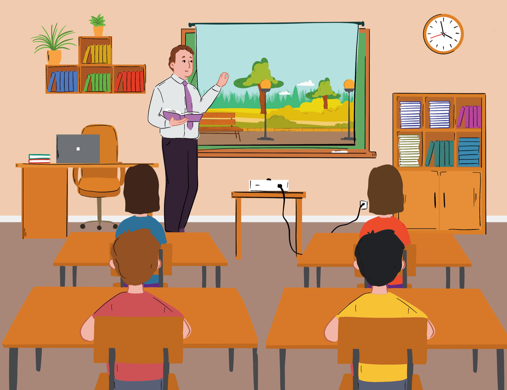

Resurset dhe trashëgimia e vendit tim
Ndihmojmë për një mjedis të pastër
Situata 1.
Mësuesi: Nxënës, sot do të flasim për ambientin, pandaj ajo çka kërkoj nga ju është që secili nga ju të tregoni se si mund të ndihmoni për një mjedis të pastër.
Arsimi: Mësues, duke qenë se makinat ndotin ajrin, nëpër qytet duhet të ecim, të shfrytëzojmë biçikletën ose transportin publik - autobusin.
Ema: Për jetë të shëndetshme në planetin tonë, në të ardhmen, një rol të rëndësishëm do të luajë menaxhimi i mbeturinave. Ato duhet të riciklohen. Riciklimi i tyre është shumë i rëndësishëm. Prodhimi i sendeve nga riciklimi i mbeturinave harxhon më pak energji se prodhimi i tyre nga materiale të reja. Mbeturinat nuk duhet të hidhen në tokë, por në shportat përkatëse.
Dea: Uji është i çmueshëm, kështu që duhet ta ruajmë. Të mos hedhim mbeturina në lumenj! Të mos e lëmë çezmën hapur pa nevojë! Të kujdesemi për ruajtjen e energjisë.
Mali: Ne mund të mbjellim drurë, shumë drurë, së paku një gjatë jetës sonë. Ne së bashku mund ta bëjmë ndryshimin për një ambient sa më të pastër dhe një jetë të shëndetshme.
Mësuesi: Ju lumtë, nxënës! Ne duhet të kujdesemi për ambientin, që edhe vetë të jemi të shëndetshëm.
